This article focuses on various ways to visualize personal light
exposure data with LightLogR. It is important to note that
LightLogR is using the ggplot2 package for
visualizations. This means that all the ggplot2 functions
can be used to further customize the plots. The following packages are
needed for the analysis:
Importing Data
We will use data imported and cleaned already in the article Import & Cleaning.
data <- readRDS("cleaned_data/ll_data.rds")gg_overview()
gg_overview() provides a glance at when data is
available for each Id. Let’s call it on our dataset.
data %>% gg_overview()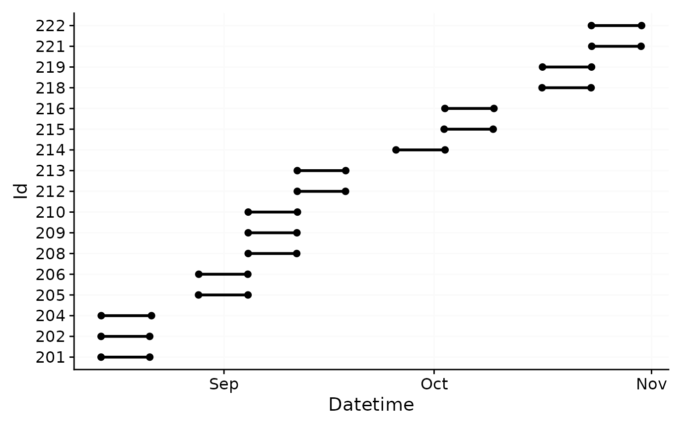
As can be seen the dataset contains 17 ids with one weeks worth of
data each, and one to three participants per week.
gg_overview() will by default test whether there are gaps
in the data and will show them as grey bars, as well as a message in the
lower right corner. Let us force this behavior in our dataset by
removing two days.
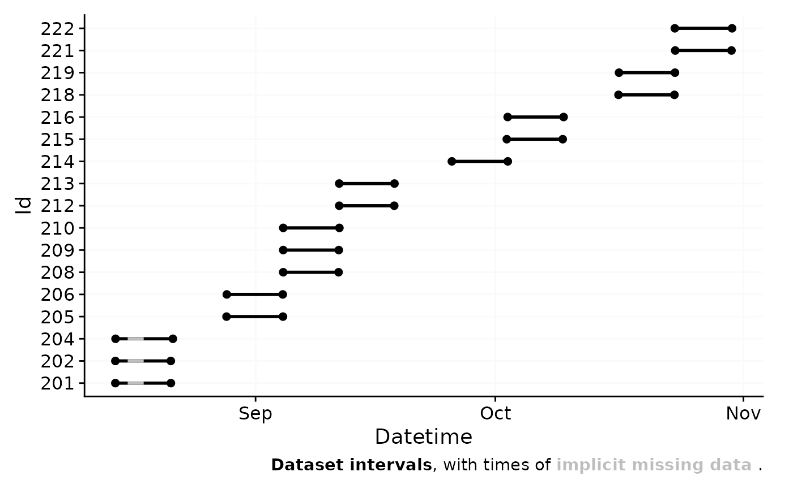
Calculating gaps in the data can be computationally expensive for
large datasets with small epochs. If you just require an overview of the
data without being concerned about gaps, you can provide an empty
tibble::tibble() to the gap.data argument.
This will skip the gap calculation and speed up the graph
generation.
data %>%
filter(!(date(Datetime) %in% c("2023-08-16", "2023-08-17"))) %>%
gg_overview(gap.data = tibble())
Hint: gg_overview() is automatically called by
import functions in LightLogR, unless the argument
auto.plot = FALSE is set. If your import is slow, this can
also help in speeding up the process.
gg_day()
Basics
gg_day() compares days within a dataset. By default it
will use the date. Let’s call it on a subset of our data.
To distinguish between different Ids, we can set the
aes_col argument to Id.
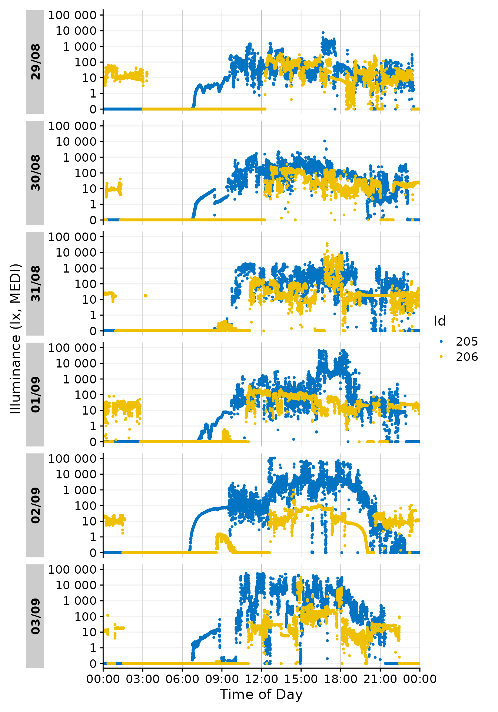
Facetting
Note that each day is represented by its own facet, which is named
after the date. We can give each Id its own facet by using the
ggplot2::facet_wrap() function. The Day.data
column is produced by gg_day() and contains the structure
of the daily facets. It has to be used by facet_wrap() to
ensure that the facets are shown correctly. We also reduce the breaks on
the x-axis to avoid overlap at 00:00.
data %>%
filter(Id %in% c(205, 206)) %>%
gg_day(aes_col = Id, size = 0.5,
x.axis.breaks = hms::hms(hours = c(0, 6, 12, 18))) +
guides(color = "none") +
facet_grid(rows = vars(Day.data), cols = vars(Id), switch = "y")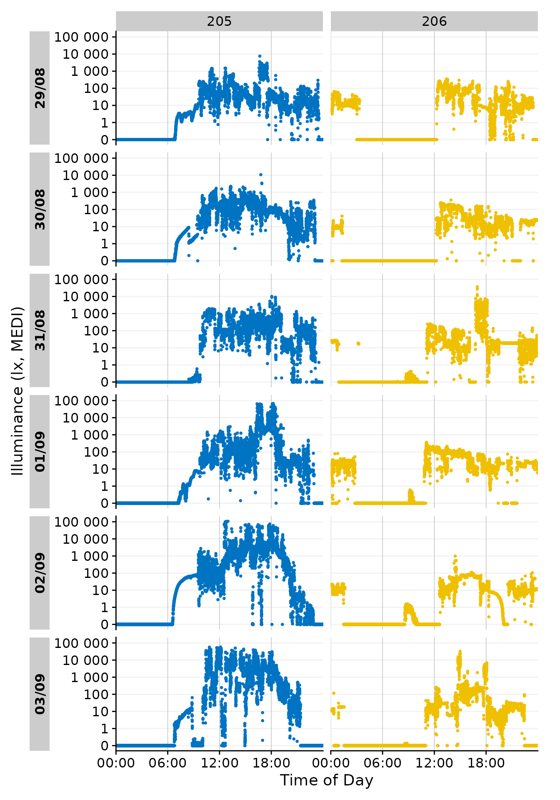
Date-grouping
Showing the days by date is the default behavior of
gg_day(). It can also be grouped by any other formatting of
base::strptime(). Using format.day = "%A" in
the function call will group all output by the weekday. Putting so many
Participants in each facet makes the plot unreadable, but it
demonstrates how gg_day() can be configured to combine
observations from different dates. We have to provide a different color
scale compared to the default one, as the default has only 10 colors
compared to the 17 we need here.
data %>%
gg_day(aes_col = Id, size = 0.5, format.day = "%A") + scale_color_viridis_d()
#> Scale for colour is already present.
#> Adding another scale for colour, which will replace the existing scale.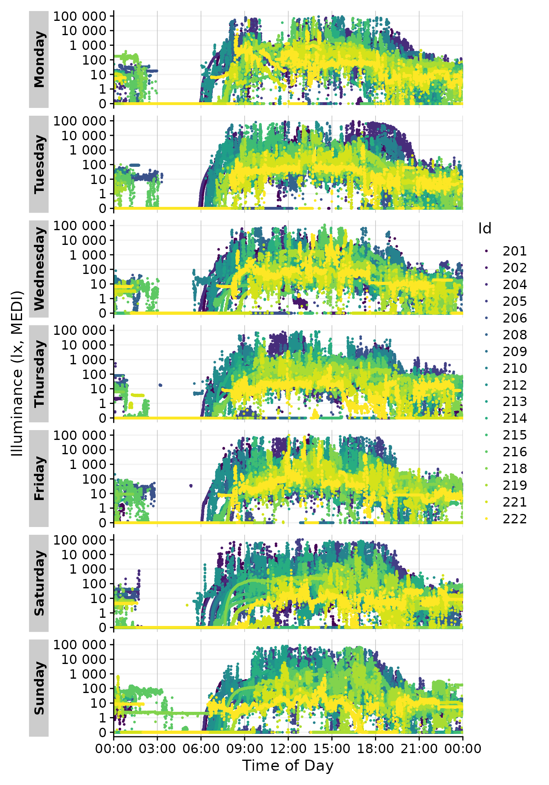
Customizing geoms and miscellanea
gg_day() uses geom_point() by default. This
can be changed by providing a different geom to the
function. Here we use geom_line() to connect the points. To
make this more readable. Let us first recreate a simpler version of the
above dataset by filtering and aggregating
data_subset <-
data %>%
filter(Id %in% c(205, 206)) %>% #choosing 2 ids
aggregate_Datetime(unit = "15 mins") %>% #aggregating to 15 min intervals
filter_Datetime(length = "3 days", full.day = TRUE) #restricting their length to 3 days
data_subset %>% gg_day(aes_col = Id)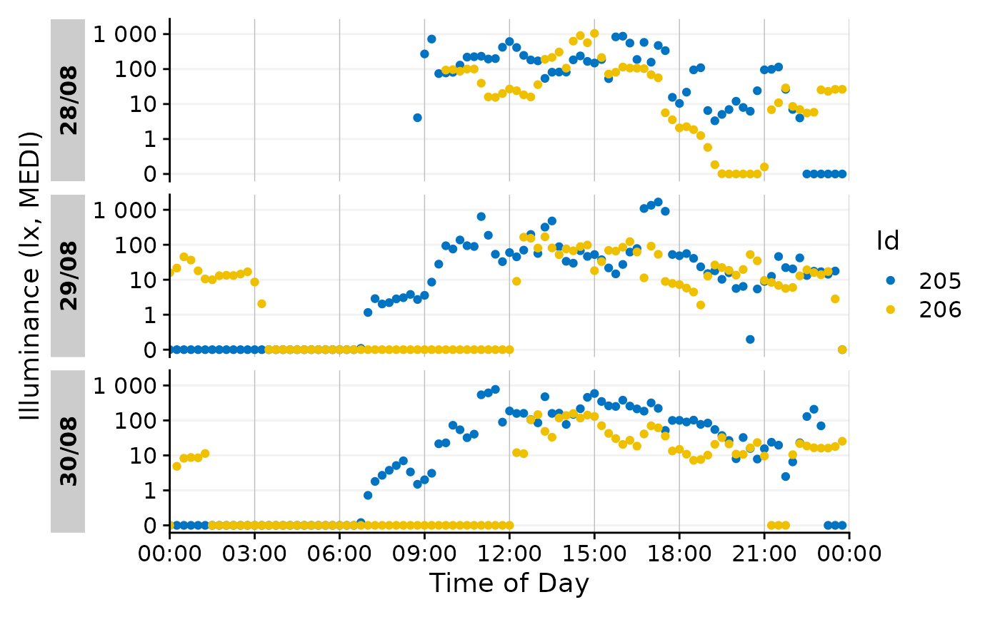
Now we can use a different geom.
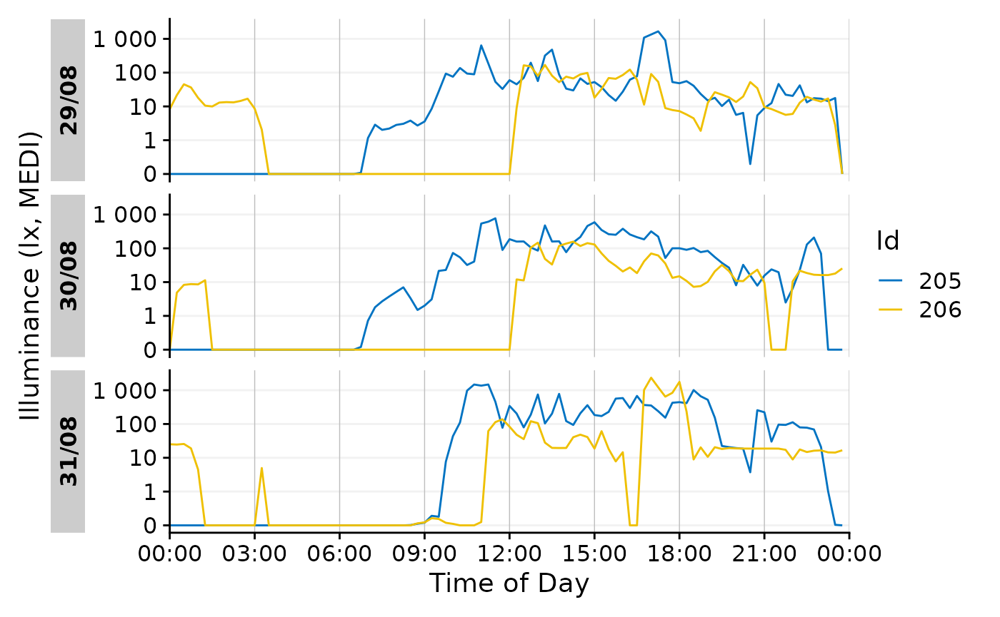
Also a ribbon is possible.
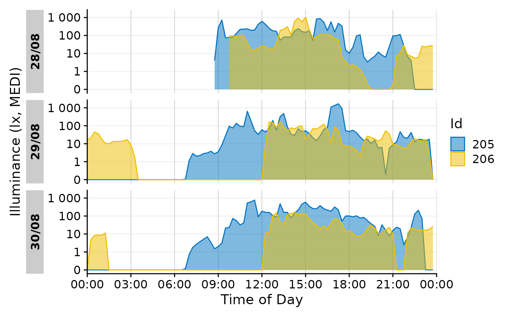
gg_days()
This is the companion function to gg_day(). Instead of
using individual days, it will create a timeline of days across all
Ids.
data_subset2 <-
data %>%
filter(Id %in% c(205, 216, 219)) %>% #choosing 2 ids
aggregate_Datetime(unit = "15 mins") #aggregating to 15 min intervals
data_subset2 %>% gg_days()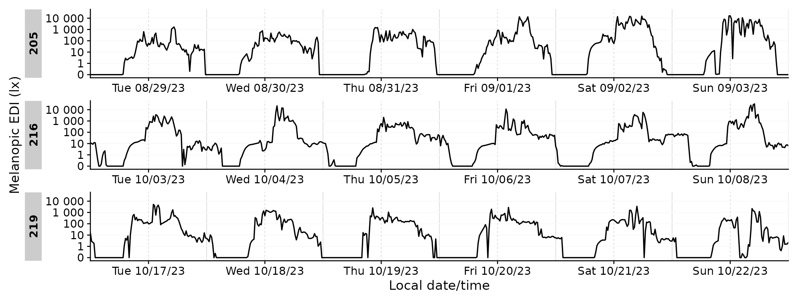
By default, gg_days() will always plot full days. Let us
strip one participant of data for three days.
data_subset3 <-
data_subset2 %>%
filter(!(Id == 205 &
date(Datetime) %in% c("2023-08-28", "2023-08-29", "2023-08-30")))
data_subset3 %>% gg_days()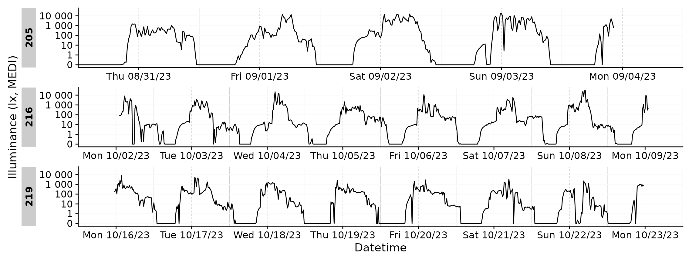
You can see the plots are misaligned in their facets. We can correct
for that by providing an exact number of days to the
x.axis.limits argument. Datetime_limits() is a
helper function from LightLogR and the documentation
reveals more about its arguments.
data_subset3 %>%
gg_days(
x.axis.limits =
\(x) Datetime_limits(x, length = ddays(7), midnight.rollover = TRUE)
)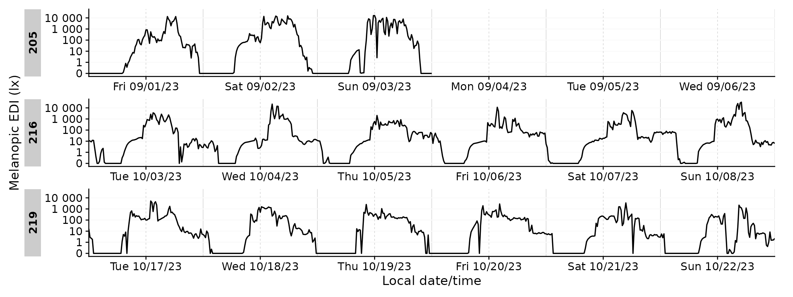
gg_days() has all of the customization options of
gg_day(). Here we will customize the plot for a ribbon,
different naming and breaks on the datetime axis.
data_subset3 %>%
gg_days(
geom = "ribbon", aes_col = Id, aes_fill = Id, alpha = 0.5, jco_color = TRUE,
x.axis.limits =
\(x) Datetime_limits(x, length = ddays(7), midnight.rollover = TRUE),
x.axis.breaks =
\(x) Datetime_breaks(x, by = "6 hours", shift = 0),
x.axis.format = "%H",
) +
guides(color = "none", fill = "none")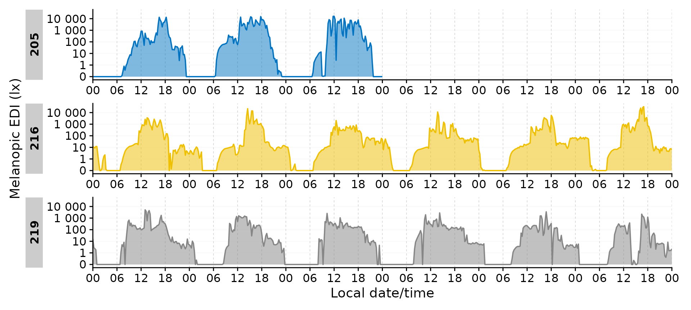
gg_doubleplot()
gg_doubleplot() repeats days within a plot, either
horizontally or vertically. Doubleplots are generally useful to
visualize patterns that center around midnight (horizontally) or that
deviate from 24-hour rhythms (vertically).
Preparation
We will use a subset from the data used in gg_day()
above: two Ids, aggregated to 15-minute intervals, and restricted to
three days. Because the first day is only partly present for both Ids,
we will use the gap_handler() function to fill in the
implicitly missing data with NA. If we ignore this step, the doubleplot
will be incorrect, as it will connect the last point of the first day
(around midnight) with the first point of the second day (somewhen
before noon), which is incorrect and also looks bad.
data_subset <- data_subset %>% gap_handler(full.days = TRUE)Horizontal doubleplot
The horizontal doubleplot is activated by default, if only one day is
present within all provided groups, or it can be set explicitly by
type = "repeat".
data_subset %>%
gg_doubleplot(aes_fill = Id, jco_color = TRUE, type = "repeat")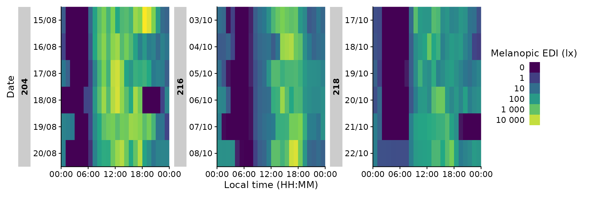
#identical:
# data_subset %>% group_by(Date = date(Datetime), .add = TRUE) %>%
# gg_doubleplot(aes_fill = Id, jco_color = TRUE)Each plot line thus is the same day, plotted twice.
Vertical doubleplot
The vertical doubleplot is activated by default if any group has more
than one day. It can be set explicitly by
type = "next".
data_subset %>%
gg_doubleplot(aes_fill = Id, jco_color = TRUE)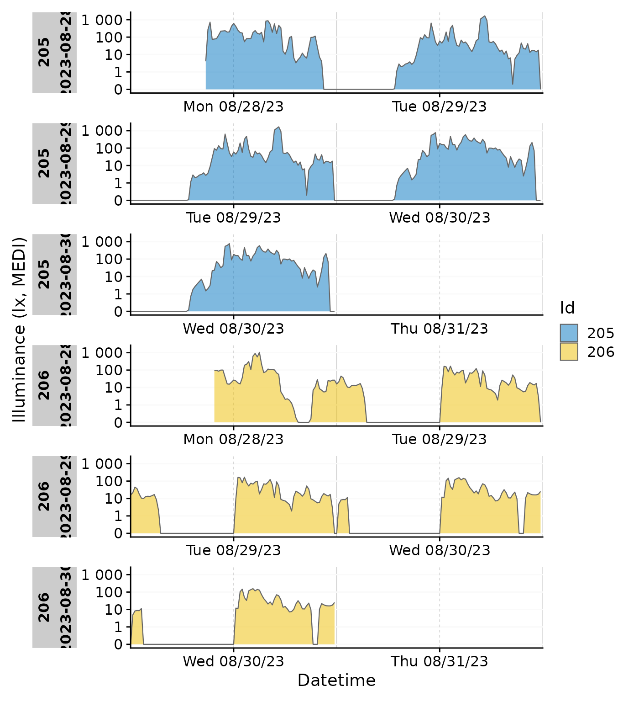
#identical:
# data_subset %>%
# gg_doubleplot(aes_fill = Id, jco_color = TRUE, type = "next")Note that the second day in each row is the first day of the next
row. This allows to visualize non-24-hour rhythms, such as when
Entrainment is lost due to pathologies or experimental conditions. Note
that the x-axis labels change automatically depending on whether the
doubleplot has type "next" or "repeat".
In both cases (horizontally and vertically) it is easy to condense the plots to a single line per day, by ungrouping the data structure (makes only sense if the datetimes are identical):
data_subset %>% ungroup() %>%
gg_doubleplot(aes_fill = Id, jco_color = TRUE)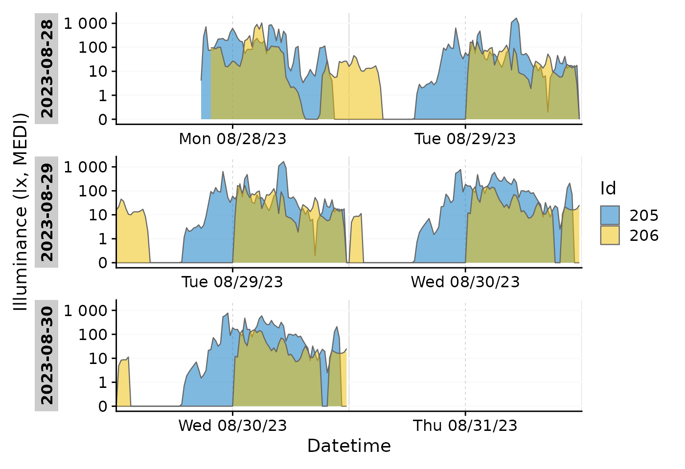
Aggregated doubleplot
Independent of gg_doubleplot(), but great in concert
with it is aggregate_Date(), which allows to aggregate
groups of data to a single day each. This way, one can easily calculate
the average day of a participant or a group of participants and then
perform a doubleplot (by default with type = "next").
Let us first group our data by whether participants were in the first or last two months of the experiment.
data_two_groups <- data %>%
mutate(
Month = case_when(month(Datetime) %in% 8:9 ~ "Aug/Sep",
month(Datetime) %in% 10:11 ~ "Oct/Nov")
) %>% group_by(Month)Now we can aggregate the data to a single day per group and make a
doubleplot from it. With aggregate_Date() we condense a
large dataset with 10-second intervals to a single day for two groups
with a 15 minute interval. The day that is assigned by default is the
median measurement day of the group.
data_two_groups %>%
aggregate_Date(unit = "15 mins") %>%
gg_doubleplot(aes_fill = Month, jco_color = TRUE) +
guides(fill = "none")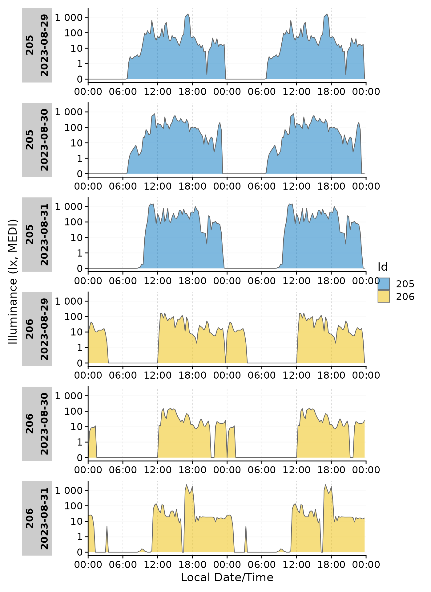
We can further improve this plot. First, we overwrite the default
behavior by setting a specific (arbitrary) date for both groups. By
ungrouping the data afterwards, we can plot the two groups in a single
row, making the two times easily comparable. Setting
facetting = FALSE gets rid of the strip label, that
otherwise would show the (arbitrary) date.
data_two_groups %>%
aggregate_Date(unit = "15 mins",
date.handler = \(x) as_date("2023-09-15")
) %>%
ungroup() %>%
gg_doubleplot(aes_fill = Month, jco_color = TRUE, facetting = FALSE)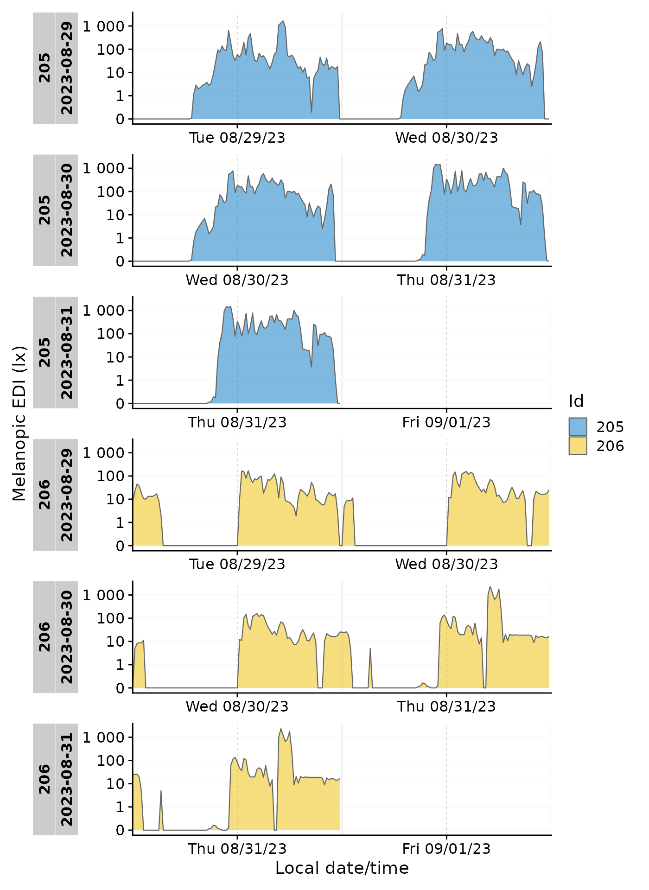
We clearly see now, that daytime light exposure starts later and ends
earlier, with lower daytime values overall. Conversely, nighttime light
exposure is increased in the second half of the experiment (Oct/Nov). By
using the gg_doubleplot() feature, the nighttime light
pattern is clearly visible even accross midnight.
Interactivity
All plotting functions have the inbuilt option to be displayed
interactively. This is great for exploring the data. The
plotly package is used for this. All LightLogR
plotting functions have the interactive argument set to
FALSE by default. Setting it to TRUE will
create an interactive plot.
Miscellaneous
Non-Light properties
LightLogR is designed to work with light data, but it
can also be used for other types of data. Simply define the y.axis
argument in the plotting functions. In the following example, we will
plot the activity data from the data dataset.
For comparison, the light data is added in the background with a lower alpha value.
data_subset2 %>%
gg_days(y.axis = PIM, y.axis.label = "Activity (PIM)") +
geom_line(aes(y=MEDI), color = "red", alpha = 0.2)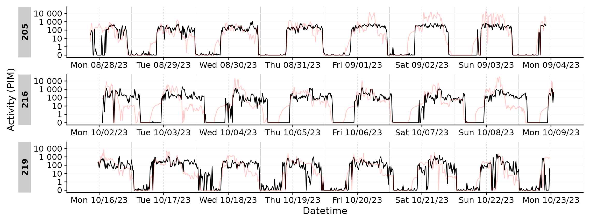
Scales
By default, LightLogR uses a so-called
symlog scale for visualizations. This scale is a
combination of a linear and a logarithmic scale, which is useful for
light data, as it allows to visualize very low and very high values in
the same plot, including 0 and negative values. As light data is
regularly zero, and exact values between 0 and 1 lux are usually not as
relevant for devices measuring up to 10^5 lx, this scale is more useful
compared to a linear or logarithmic scaling.
The way symlog works is that there is a threshold up to
which absolute values are kept linear, and beyond which they are
transformed logarithmically. The default threshold is 1, which is a good
choice for light data. However, this can be changed by setting the
threshold argument in the plotting functions. See a full
documentation of the symlog scale
symlog_trans().
Here is an example to show how the transformation is particularly useful for differences that cross zero. We will use the single-day doubleplot data from above.
#dataset from above
data <-
data_two_groups %>%
aggregate_Date(unit = "15 mins",
date.handler = \(x) as_date("2023-09-15")
) %>%
ungroup()
#original doubleplot from above
original_db <- data %>%
gg_doubleplot(aes_fill = Month, jco_color = TRUE, facetting = FALSE) +
guides(fill = "none")
#difference doubleplot, showing the average difference between the to phases
difference_db <-
data %>%
select(Datetime, MEDI, Month) %>%
pivot_wider(names_from = Month, values_from = MEDI) %>%
gg_doubleplot(y.axis = `Oct/Nov`-`Aug/Sep`, facetting = FALSE,
y.axis.label = "difference (lx, MEDI)")
#plotting
original_db / difference_db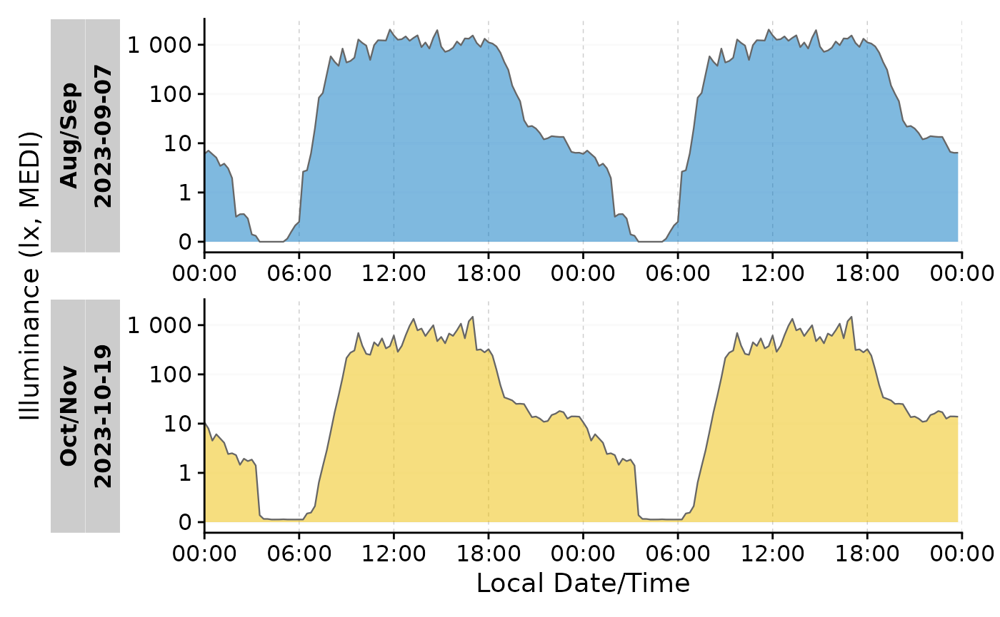
We can clearly see the difference in light exposure is crossing 0 several times. With the symlog scale no values are discarded, because they are outside the traditional range of a logarithmic scale. Should values below 1 lux be of interest, the parameters of the transformation can be adjusted.
data %>%
select(Datetime, MEDI, Month) %>%
pivot_wider(names_from = Month, values_from = MEDI) %>%
gg_doubleplot(y.axis = `Oct/Nov`-`Aug/Sep`, facetting = FALSE,
y.axis.label = "difference (lx, MEDI)",
y.scale = symlog_trans(thr = 0.001),
y.axis.breaks = c(-10^(-2:5), 0, 10^(5:-2))
)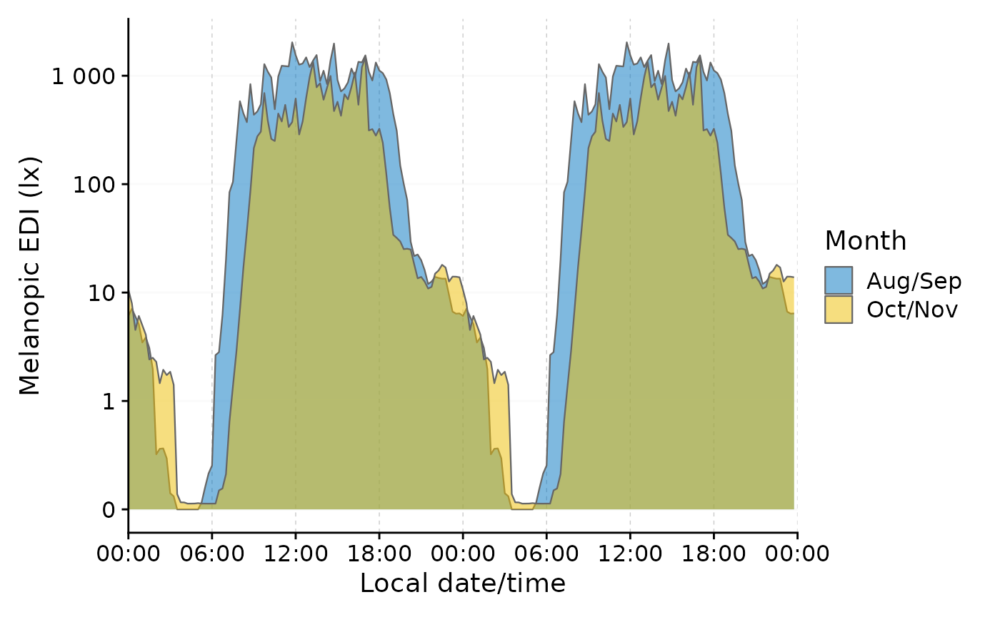